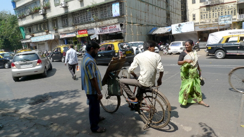
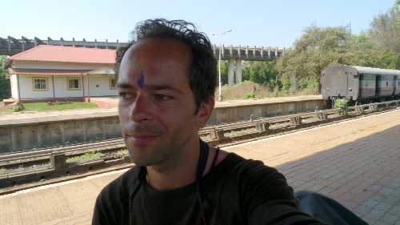
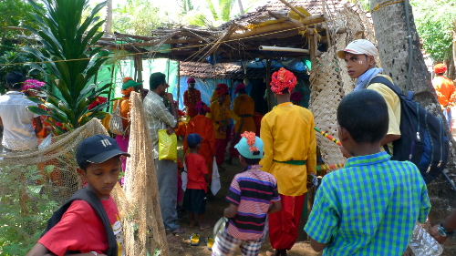
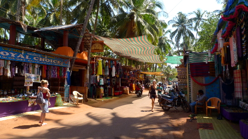
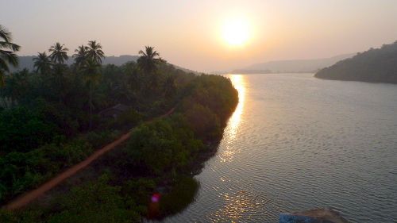
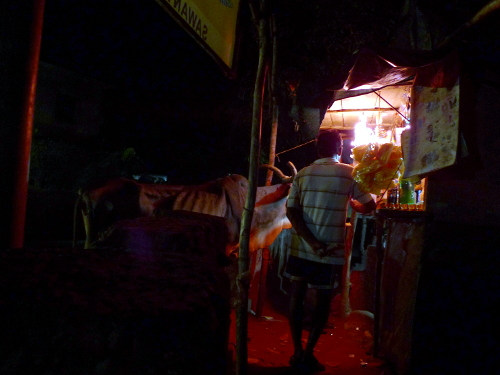
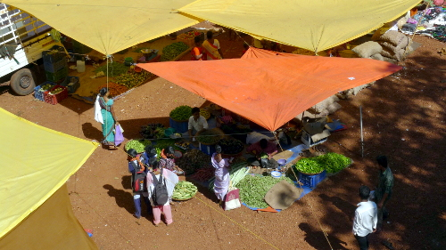

Mar 08

Mar 06

Mar 04
My last day in an Indian beach town for the foreseeable future. So I decided to make it a relaxed one: A sunrise swim in the big waves, a dosa masala breakfast with chai, a lot of writing on a rocky outcrop over the sea in the early morning sun, momos for lunch, a siesta and a tandoori meal for dinner. Did I say it was a relaxed day?
All over the town there are more and more colorful and musical things going on. Even the animals can’t escape.
Back over the mountain in tomorrow’s early hours before the heat…
Mar 03

Mar 02
I climbed some real mountains today, on the way to Agonda, my Southern-most destination. After 3 days relaxing in this small town on an amazing beach, it will be one day back to the North, and then the train back to Mumbai.
Every time I go further South, I think it cannot get more tropical, but it can. The photo shows some beautiful rice paddies that I passed along the way, just before the big climb.
Mar 01
Yesterday evening, a big part of India was hit by a cyclone. Thunder, lightning, a lot of wind and horizontal rain (15 mm here in Goa). Normally, at this time of the year there is no rain at all, so this was something very special. Of course the electricity grid went out a few times, and the roads were pretty muddy in the morning when I started riding.
Because of all the water that came down, humidity is very high now, making it feel really tropical (that means: a lot of sweating). Even the dogs took it very slowly today (although I have to say that they behave pretty relaxed most of the time).
Feb 28
There are some things that define the things as they are in India. Here two examples that made me laugh in the last few days.
Feb 28
As soon as I left the coast in North Goa, I found myself among only Indians again. Here on a ferry to the state capital of Goa: Panjim.
Panjim is a lovely city, and I am very happy that a taxi driver whom I was asking directions from, suggested to me to stay in the city instead of the coast. Of coarse his friend had a hotel and he would guide me there and so and so, but it was a good hotel and even the price was right. In a non-touristy area this way of touting is not always so bad.
Anyway, Panjim shows a lot of its Portuguese history, especially in the buildings high on the hill that are often even maintained in a reasonable way, on wide lanes lined with trees and flowers no hooting rickshaws and churches instead of temples. Very non-Indian really.
Of course the down-town area is very Indian, and so there was awesome food to be found again. Really good!
Feb 27

Feb 26
Well, they really were doing exactly the things I had heard about them: crazy things under a paraglider. I saw them doing a tandem flight with two passengers for example. Another tandem takeoff, in a wind that was far too strong to begin with, ended in a tree and on a second try with a very short backwards flight. Not how these things should be done at all. It made for some interesting watching though.
Feb 25

Feb 23
The place comes to life on mondays, when everyone can stock up on food, clothing and more, in almost artisan displays.
Feb 22

Feb 21
Kunkeshwar, home of the Konkan Kashi temple, a simple hotel and a few stalls and not much more. This is the quiet place that I arrived to this day. Or so I thought…
After dark, the soft religious music that had been flowing from the temple all day was increased in volume and kept on playing until 6 the next morning. Closing the flimsy windows did not bring relief and only reduced the much-needed inflow of cool night-air. As I learned later, the temple had a festival this weekend and this is how they do it. Next time, I will seek out a hotel as far away from a temple as possible to decrease my chances for a night like this.
Feb 20
After getting up early for a visit to the Swami Swaroopanand temple before sunrise, this was the view that I was gifted with just after I left in the first daylight. Quite nice.
Then, the searching for and finding the guesthouse that I had got a telephone number of, off a guest in yesterday’s guesthouse was interesting. After my arrival in the town Nate, I called the number but it was not answered. After some asking around and cycling up and down the town twice, I was about to give up and cycle further, when one last try of asking for directions stirred some things up: an English speaker was called for me from the crowd. When I mentioned the name of the owners, he borrowed someones phone and started calling several numbers. Then he told me to ride out of town to the ice factory (recognizable by parked pickups with crates in the back), to wait there and that I would be picked up in a few minutes.
And yes, after a few minutes a young man appeared on a motorbike, with his wife on the back and he showed me the way to their property, some kilometers out of town (that cost me some energy, keeping up with the motorbike). It turned out to be the most magnificent place, on top of a hill with coastal view and a dining-deck on top. I could not be happier for such a quiet and remote place to stay for a night.
By the way, the number I had was of the owner’s mother, who was not at home at the time of my call…
Here the view, just before sunset:
Feb 19

A tour of their mango-product factory and a lot of picture-showing and letting the kids ride the bike made the day fly past.
Feb 18
On a visit to India, there is no possibility to escape the game of cricket. Especially the kids play it everywhere and are all too eager to learn it to the stranger. One of the daughters at the Paawas guesthouse learned me the basics, which did not take me too long. Luckily there were no windows to break, I only shot the ball into the neighbors garden twice (which of course was not a problem at all).
Feb 17
The climbing is not always easy, especially on my bike without gears that was never made for a trip like this, so I have to resort to walking up the hills quite often. Many times, the views from up-high are breathtakingly good. Seeing all this is certainly worth going through all the trouble.
Feb 16
Finding the right road to take is not always easy with road signs like the ones in the picture. Luckily, there is always a bunch of these guys around, who are more than happy to help in the translation. In exchange for having their picture taken of course.
Feb 15
The plan was to ride to Dapoli today and to stay there for the night. Unfortunately, they had just built a new hotel next to the old one and were now asking ridiculous prices for a room. That, combined with the thick cloud of smoke that Dapoli was in, was enough reason for me to get down to the coast again, to Dabhol. Why they burn the waste at the side of the road in such big quantities puzzles me every morning. Dapoli was particularly bad, with many fires in sight at every moment. It was even painful for the eyes…
Dabhol turned out to be a fantastic little place with lots of helpful and interesting people, where I found a guesthouse that made me fresh fried fish and curry for lunch, and prawns for dinner.
The children were also very happy: they could practice their English with me, right before their exams.